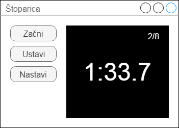

Licenca
To delo je na voljo pod pogoji slovenske licence Creative Commons 2.5:
priznanje avtorstva - nekomercialno - deljenje pod enakimi pogoji.
Celotna licenca je na voljo na spletu na naslovu http://creativecommons.org/licenses/by-nc-sa/2.5/si/. V skladu s to licenco je dovoljeno vsakemu uporabniku delo razmnoževati, distribuirati, javno priobčevati, dajati v najem in tudi predelovati, vendar samo v nekomercialne namene in ob pogoju, da navede avtorja oziroma avtorje in izdajatelja tega dela. Če uporabnik delo predela, kar pomeni, da ga spremeni, preoblikuje, prevede ali uporabi to delo v svojem delu, lahko predelavo dela ponudi na voljo le pod pogoji, ki so enaki pogojem iz te licence oziroma pod enako licenco.

Štoparica za merjenje časa
Naslednji primer GUI programa bo preprosta štoparica. S pomočjo štoparice bomo prikazali delovanje oziroma uporabo več gumbov. Uporabili bomo tri gumbe, s katerimi bomo zagnali štoparico, jo ustavili ali ponastavili, t.j. nastavili na začetno vrednost.
Da bo vse skupaj bolj zanimivo, bo štoparica prikazovala čas do desetinke sekunde natančno. Vsakič, ko bomo štoparico ustavili, se bo povečal števec, ki bo štel skupno število ustavitev. Poleg tega bomo šteli še ustavitve, ko nam bo štoparico uspelo ustaviti do sekunde natančno – to pomeni, da bo desetinka sekunde enaka 0.
Ta program bo služil tudi kot zgled, kako v programu uporabljamo merilce časa (ang. timers) in knjižnico time.
Izgled GUI vmesnika našega programa bo podoben spodnjemu modelu.

1 # encoding: utf-8 2 import tkinter as tk 3 4 # Definicija globalnih spremenljivk 5 cas10 = 0 # število desetink sekunde 6 celih = 0 # poizkusi, ustavljeni na celo sekundo 7 skupaj = 0 # vsi poizkusi 8 stevec = 0 9 10 # Pomožna funkcija, ki pretvori čas v desetinke 11 # sekunde in oblikuje izpis v obliko A:BC.D 12 def oblikuj_cas(t): 13 D = t % 10 14 E = t // 10 15 A = E // 60 16 S = E % 60 17 B = S // 10 18 C = S % 10 19 return str(A) + ":" + str(B) + str(C) + "." + str(D) 20 21 # Določi časovni rokovalnik za števec z intervalom 22 # 100 milisekund (desetinka sekunde) 23 def casovni_rokovalnik(): 24 global cas10, stevec 25 # Ponastavi čas, ko doseže 10 minut 26 if (cas10 == 5999): 27 cas10 = 0 28 else: 29 cas10 = cas10 + 1 30 if stevec: 31 izpis() 32 okvir.after(100, casovni_rokovalnik) 33 34 # Določi rokovalnik izpisovanja na platno 35 def izpis(): 36 # Izbriši vsebino platna 37 platno.delete("all") 38 # Na novo napiši besedilo 39 niz1 = str(celih) + "/" + str(skupaj) 40 niz2 = oblikuj_cas(cas10) 41 platno.create_text(160, 30, fill="white", text=niz1, \ 42 font=("Times", 18)) 43 platno.create_text(100, 100, fill="white", text=niz2, \ 44 font=("Times", 36)) 45 46 # Določi rokovalnik gumba 'Začni' 47 def zacni(): 48 global stevec 49 stevec = 1 # Začni ali nadaljuj štopanje 50 casovni_rokovalnik() 51 52 # Določi rokovalnik gumba 'Ustavi' 53 def ustavi(): 54 global cas10, celih, skupaj, stevec 55 if stevec: 56 stevec = 0 # Ustavi štopanje 57 # Posodobi števec vseh poizkusov 58 skupaj = skupaj + 1 59 # Posodobi števec celih poizkusov 60 if (cas10 % 10 == 0): 61 celih = celih + 1 62 izpis() 63 64 # Določi rokovalnik gumba 'Nastavi' 65 def nastavi(): 66 global cas10, celih, skupaj, stevec 67 cas10 = 0 68 celih = 0 69 skupaj = 0 70 stevec = 0 71 izpis() 72 73 # Ustvari okno, okvir in platno 74 okno = tk.Tk() 75 okno.title("Štoparica") 76 okno.geometry("400x250") 77 78 okvir = tk.Frame(okno) 79 okvir.grid(row=0, column=0, pady=20) 80 81 platno = tk.Canvas(okno, width=200, height=200, bg="black") 82 platno.grid(row=0, column=1, pady=20) 83 84 platno.create_text(160, 30, fill="white", text="0/0", \ 85 font=("Times", 18)) 86 platno.create_text(100, 100, fill="white", text="0:00.0", \ 87 font=("Times", 36)) 88 89 # Poveži funkcije z dogodkovnimi rokovalniki 90 gumb1 = tk.Button(okvir, text="Začni", command=zacni) 91 gumb1.configure(width=10) 92 gumb1.grid(row=0, column=0, padx=45) 93 gumb2 = tk.Button(okvir, text="Ustavi", command=ustavi) 94 gumb2.configure(width=10) 95 gumb2.grid(row=1, column=0, padx=45) 96 gumb3 = tk.Button(okvir, text="Nastavi", command=nastavi) 97 gumb3.configure(width=10) 98 gumb3.grid(row=2, column=0, padx=45) 99 100 # Zaženi dogodkovno zanko 101 okno.mainloop() 102
 Izvorna koda
Izvorna koda